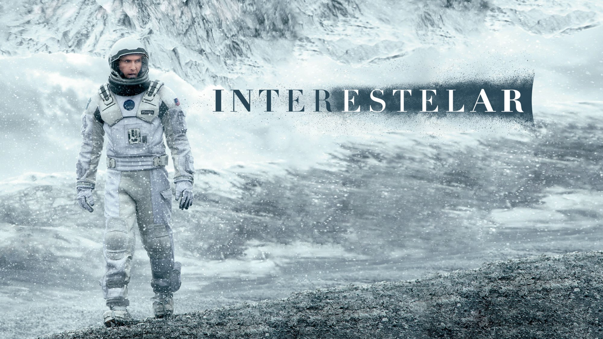

El eterno resplando de una mente sin recuerdos – "Eterno resplandor de una mente sin recuerdos" es una película dirigida por Michel Gondry y escrita por Charlie Kaufman. La trama sigue a Joel, quien al descubrir que su novia, Clementine, se ha sometido a un procedimiento para borrarlo de su memoria, decide hacer lo mismo. Sin embargo, durante el proceso, se arrepiente y lucha por recuperar sus recuerdos

Interestelar – "Interestelar" es una película de ciencia ficción dirigida por Christopher Nolan. La historia sigue a un grupo de astronautas que viajan a través de un agujero de gusano en busca de un nuevo hogar para la humanidad mientras la Tierra se vuelve inhabitable.